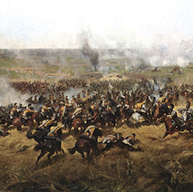
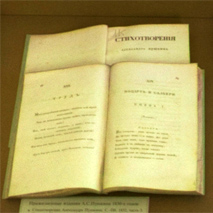
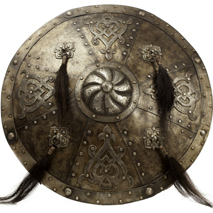
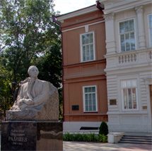
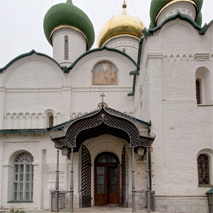
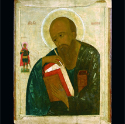
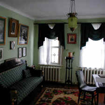
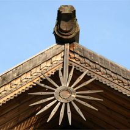
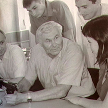
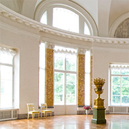

Открытое правительство
Личный кабинет
Email*:
Пароль*:
Забыли пароль?
Зарегистрироваться
Атлас
Образы России
Виртуальные музеи
Трансляции
Лекции
Лента времени
Новости
Общение
Еще
Общественный совет
Государственные услуги
О проекте
Виртуальные музеи
Всероссийское музейное объединение музыкальной культуры имени М.И. Глинки
Театральный музей имени А.А. Бахрушина
Государственный музей искусства народов Востока
Странноприимный дом
Н.П. Шереметьева

Музей-панорама «Бородинская битва»

Мемориальный Музей-квартира А.С.Пушкина

Государственный военно-исторический и природный
музей-заповедник «Куликово поле»
Музей-усадьба Л.Н. Толстого
«Ясная Поляна»

Саратовский государственный художественный музей
имени А.Н. Радищева

Владимиро-Суздальский музей-заповедник
Государственный музей архитектуры
имени А.В. Щусева

Рязанский историко-архитектурный музей-заповедник

Музей Памяти декабристов

Архангельский государственный музей деревянного зодчества
и народного искусства «Малые Корелы»

Музей стрелкового оружия им. Михаила Калашникова

Государственный музей-заповедник «Царское Село»
© Портал культурного наследия России
О проекте
|
Контактная информация
Рассказать о портале